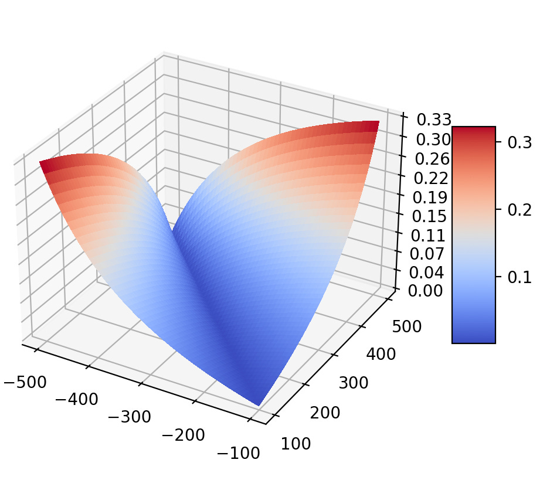
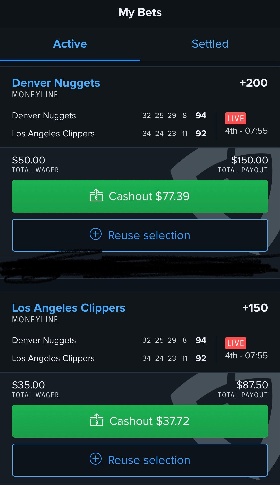

If you are not familiar with the concept of a sportsbook, it is basically a place where gamblers come together to place bets on a variety of outcomes that can take place during a game or even an entire season (e.g. who the NBA Finals Champion will be in 2023). Popular sportsbooks like FanDuel and Ceaser’s allow you to place bets for tonight’s games both before and during the course of the game, with odds continuously updating as the game progresses as mentioned here. Two key things we need to worry about are the odds being offered to us, and the juice the comes with them.
Also known as “the vig”, it is the fee the bookies charge when you are making a bet (similar to how the house
collects a rake when you play a game of poker in a casino — you are participating in a player-vs-player game, but
the casino collects a fee generally equal to some small % of the total pot just for organizing and running the
table). Note that this fee is included directly in the odds the book provides. How so? Well, odds are implied
probabilities, and the probability of the set of all possible outcomes occurring should sum to 1. However, take a
look at any sportsbook and we will see this is not the case. This makes it so that no matter what the outcome is,
the book collects money. Below is a script I wrote to calculate the vig on
given American money line odds by passing in an array like [290, -360].
def vig(odds_arr):
"""Calculate vig based on odds offered
Parameters
----------
odds_arr : list
Odds being offered by a sportsbook
Returns
-------
float
Vig collected by the sportsbook
"""
imp_prob_list = []
for odds in odds_arr:
if odds > 0:
# uses formula 1-p/p = odds/100
implied_prob = 100/(100+odds)
else:
implied_prob = abs(odds)/((abs(odds) + 100))
imp_prob_list.append(implied_prob)
return sum(imp_prob_list) - 1
We can visualize how the book’s vig changes as a function of the money line split (which is what the book offers on any straight bet placed i.e. bet placed on the outright winner/loser of a game) pretty easily.
Interestingly, I was not able to find anything about how odds are actually being adjusted throughout live games on Fanduel, only for horse racing events which are a type of parimutuel betting i.e. pool betting. In such pool betting, you are not betting against the house but rather against other bettors. To make an analogy, the sportsbook functions like an Automated Market Maker, where in this case bettors are trading against a liquidity pool which is the pool of bets placed on different horses as opposed to the supply of different cryptocurrencies and crypto tokens. The sportsbook algorithm would then regulate the odds offered on racehorses based on bets in the pool. Again, this pool betting methodology was only mentioned in the context of FanDuel horse racing. However, odds could be adjusted based on the flow of money on either side so Fanduel (the house in this setting) is not actively betting against its players (the gamblers using their app), and is instead attempting to keep a neutral position while collecting the vig. Alternatively, FanDuel may be playing the role of a traditional market maker.
In traditional finance, a market maker warehouses risk and try to determine the fair value of an instrument, placing bids below what they perceive as the “fair value” and offers above this value, which is calculated using some model. In the context of sports betting, FanDuel data scientists may run some simulations to see how simulated games pan out to make a market around the game, team, and player stats. The money line they quote is akin to a bid-ask spread.
What is the incentive for them to not quote too wide? Imagine a line set wide by a book at +300/-500 on the outright winner of a game of basketball between the Knicks and Celtics, where the Knicks are the underdog (and thus the Celtics are the favorite to win). Using the function above, we calculate and find the vig to be 8.33%. A gambler who sees this line can think of it the following way: the book is willing to pay me $3 for every $1 I stake on the Knicks winning (get back any money staked plus an additional $3 for every $1 that was staked) and the book is willing to pay me $0.20 for every $1 I stake on the Knicks losing (get back any money staked plus an additional $0.20 for every $1 that was staked). This ask may be too high ($1 stake for only a $0.20 win on a Knicks loss) and the bid too low ($1 stake for only a $5 win on a Knicks win) so the gambler may pass on betting entirely. Note that the gambler could have viewed the line payoff in terms of a Celtics win/loss, and the conclusion would be the same: the money line split is too wide resulting in too high of an ask and too low of a bid for the gambler to feel comfortable in placing a bet on either side. Therefore, the incentive for the book to not quote too wide is increased market participation.
Conversely, consider a narrow line at +200/-250 on the same game mentioned above in the wide quote scenario. In this case, the sportsbook would need to be very confident in the accuracy of their estimate of the true probability of the Knicks winning (and Celtics losing) or vice versa, because if it is not, the book cannot be confident that the narrow interval will enclose the true probability, resulting in potential losses by those gambler’s picking off low offers or high bids due to a tight market being made around the “wrong” point. Note that I use the term true probability to differentiate between the implied probability from book odds and the actual probability of a team winning).
Okay, now that we have vig and odds out of the way, it is probably apparent how you will always be at a severe loss trying to play both sides of the book. That is, for a given money line split at a particular point in time, if you were to bet on one team winning and the other team winning as well, you would lose anywhere between 5% to 15% using real odds that sportsbook offers. Now, this is not surprising since if this were a profitable move, there would be an arbitrage opportunity. What is surprising, however, is that if one was to seek protection from uncertain outcomes, this play can be used to your advantage. When? The answer lies in closing positions.
The sportsbook FanDuel allows this by offering a Cash Out option, but they give you the short end of the stick: If your bet is currently winning, they give you a cash out option that will net you a profit, albeit a not so great one, and if your bet is currently losing, the option to cash out may not exist at all, or it is really unattractive (10s of cents on the dollar, depending on how far away from being a winning bet it is). Inspired by the way I place bets in the first place, which often involves not making directional bets, I realized that hedging was the solution to effectively cash out at more attractive prices.
what I did above was a way to cash out on the moneyline bet on the Denver Nuggets to win against the LA Clippers without clicking FanDuel’s awful ‘Cashout’ option which would have made me $77.39 - $50.00 = $27.39 regardless of whether the Nuggets actually went on to win or lose the game. Instead, using the odds offered on the Clippers winning, I placed a $35 bet on the Clippers to win with a total payout of $87.50, meaning I would make $87.50 - $35.00 = $52.50 if the Clippers went on to win, and thus netted $2.50 since I would lose the $50.00 bet that the Nuggets will win. The other case is that the Nuggets do indeed win the game, in which case the $35 bet on the Clippers would pay me nothing, and my net profit would be $150.00 - $50.00 - $35.00 = $65.00, which is alot better than the $27.39 profit FanDuel is offering via the Cashout button. Next time you are looking to close out early, remember this article and shop around hedge options.